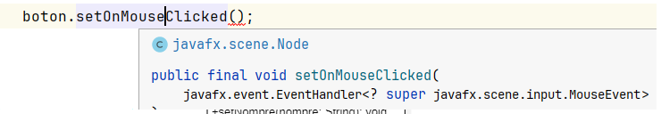
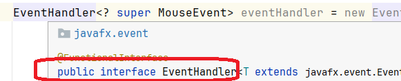

⚕️Interfaces¶
❇️ Definición¶
Una interfaz es una clase que define métodos pero no los implementa. La idea es proporcionar un comportamiento común que pueda ser utilizado por varias clases que implemente una interfaz. No se pueden instanciar.
Te permiten definir tipos cuyos comportamientos pueden ser compartidos por varias clases que no están relacionadas, con el fin de crear instancias que se adapten a un dominio específico.
Las interfaces juegan un papel fundamental en la creación de aplicaciones Java ya que permiten interactuar a objetos no relacionados entre sí. Utilizando interfaces es posible que clases no relacionadas, situadas en distintas jerarquías de clases sin relaciones de herencia, tengan comportamientos comunes
Una interfaz es una lista de constantes y signaturas de métodos. Los métodos no están implementados en la interfaz (no hay cuerpo de método).
❇️ ¿Por qué se utilizan las interfaces?¶
Hay principalmente tres razones para usar la interfaz.
- Para lograr la abstracción.
- Dan algunas ventajas de herencia múltiple, sin las desventajas de la herencia.
- Para obtener un mayor desacoplamiento del código.
Las interfaces son muy usadas, de hecho, muchas de las librerías de Java hacen un uso extensivo de las interfaces.
Sabemos que Java tiene herencia única, es decir, una clase hija hereda solo de una clase padre. Esto, por lo general, es suficiente para codificar nuestras aplicaciones. Aunque a veces sería conveniente la herencia múltiple, donde una clase hija pudiera heredar características de varias clases padres. Pero esto puede llegar a ser confuso. ¿Qué sucede cuando dos padres tienen diferentes versiones del mismo método?
Una interfaz describe aspectos de una clase distintos de los que hereda de su padre. Una interfaz es un conjunto de requisitos que la clase debe implementar.
❇️ Interfaz vs Herencia¶
Una clase puede extender de una clase padre para heredar los métodos y las variables de instancia de ese padre.
Una clase también puede implementar una interfaz al incluir métodos y constantes adicionales. Sin embargo, los métodos en la interfaz deben escribirse explícitamente como parte de la definición de la clase. La interfaz es una lista de requisitos que debe incluir la definición de clase (a través de código explícito, no a través de herencia).
Por ejemplo, una clase Coche podría extender de la clase Vehiculo. La herencia le da todos los métodos y variables de instancia. Pero si Coche también implementa la interfaz Impuestos, entonces su definición debe contener código para TODOS los métodos enumerados en Impuestos.
Los nombres de las interfaces suelen acabar en able aunque no es necesario: configurable,
arrancable, dibujable, etc.
Una clase extiende de un solo padre, pero puede implementar varias interfaces.
❇️ Cómo crear una interfaz¶
Para crear una interfaz en IntelliJ, haremos lo siguiente:
- Botón derecho en el paquete de nuestra aplicación → New ---> Java class y seleccionamos Interface.


En Java, los nombres de las interfaces, por lo general, deberían ser adjetivos o nombres que describen el concepto abstracto que representa la interfaz. La primera letra de cada palabra separada en mayúscula. En algunos casos, las interfaces también pueden ser sustantivos cuando presentan una familia de clases, p. List o Map.

Una vez creada la interfaz definiremos los métodos que desarrollarán las clases que implementen esta interfaz teniendo en cuenta que, el compilador de Java agrega las palabras clave:
public abstractcuando se define un método, por lo que se puede omitir en los encabezados de los métodos.public static finalen el caso de las constantes.

Warning
Los métodos abstractos NO pueden ser PRIVATE ni PROTECTED.
Se estructura de forma que primero se sitúan las constantes y luego los métodos.
Si ponemos public IntelliJ nos avisa:


public interface Impuesto {
//constantes
double TASA_DE_IMPUESTO = 0.06;
//métodos abstractos
double calcularImpuestoAnual();
void imprimirImpuesto();
}
❇️ Relaciones entre interfaces y clases¶
Tenemos tres tipos de relaciones:
classBextendsclassA: una clase B hereda de una clase A.classimplementsinterface1,interface2, ...: una clase puede implementar una o varias interfaces, para ello usaremos la palabra reservada implements.interfaceBextendsinterfaceA,interfaceC, ...: una interfaz B puede heredar los métodos de una o varias interfaces. Una interfaz NO PUEDE heredar de una clase.
También podemos combinar algunas relaciones:
classBextendsclassAimplementsinterface1,interface2, ...: una clase B hereda de una clase A y también implementa los métodos definidos en las interfaces. (Simulación de la herencia múltiple)
❇️ Ejemplo de código¶
Por ejemplo, vamos a crear la clase TelefonoMovil:

Observamos que IntelliJ nos genera un error, ya que debemos definir o implementar los métodos que habíamos declarado en la interfaz. Si hacemos click en el error, IntelliJ nos ofrece crearlos:


public class TelefonoMovil {
private int miNumero;
private boolean estaSonando;
public TelefonoMovil(int miNumero) {
this.miNumero = miNumero;
}
@Override
public double calcular() {
return TASA_DE_IMPUESTO * 12;
}
@Override
public void imprimirImpuesto() {
System.out.println("El impuesto anual del teléfono es " + calcular());
}
}
IntelliJ nos ha creado TODOS los métodos que habíamos definido en la interfaz, como vemos con la anotación @Override, ya que los está sobreescribiendo puesto que estaban declarados en la interfaz.
Note
TODOS los métodos definidos en la interfaz se han de implementar en la clase, no podríamos implementar solo algunos.
Veamos como probar el código en nuestra clase Main:
public class MainTelefono {
public static void main(String[] args) {
//Variable creada de tipo móvil
TelefonoMovil iphone5=new TelefonoMovil(555456789);
iphone5.imprimirImpuesto();
//Variable de tipo Impuesto que contiene objeto Movil. Usa el polimorfismo
Impuesto impuestoMovil = new TelefonoMovil(123456789);
impuestoMOvil.imprimirImpuesto();
}
}
Warning
Las interfaces NO PUEDEN INSTANCIARSE, es decir, no podemos crear objetos de interfaces. Hay que usar una clase que haya implementado la funcionalidad definida por la interfaz.
public static void main(String[] args) {
//ERROR
Impuesto impuestoMovil = new Impuesto();
impuestoMOvil.imprimirImpuesto();
}
❇️Otro ejemplo con herencia e interface¶
Queremos crear un videojuego en el que tenemos pieza de cubo que el usuario las utilizará para construir un mundo. Algunas de las piezas(no todas) cuando se toquen pueden explotar y otras pueden quemarse, otras pueden quemarse y explotar.
Por otro lado, tenemos otros elementos que puedes explotar, como puede ser una Nave. El diagrama de clases puedes ser

//*********Clase padre****
public class Cubo {
String nombre;
public Cubo(String nombre) {
this.nombre = nombre;
}
}
//********Interfaces**************
public interface Inicinerable {
void incinerar();
}
//******************************
public interface Explotable {
void explotar();
}
//******Clases hijas************
public class Cesped extends Cubo{
public Cesped(String nombre) {
super(nombre);
}
}
//******************************
public class Dinamita extends Cubo implements Explotable{
public Dinamita(String nombre) {
super(nombre);
}
@Override
public void explotar() {
System.out.println("Boooo!!!");
}
}
//********************************
public class Madera extends Cubo implements Inicinerable{
public Madera(String nombre) {
super(nombre);
}
@Override
public void incinerar() {
System.out.println("fuegooooo!!!");
}
}
//********************************
public class Butano extends Cubo implements Inicinerable,Explotable{
public Butano(String nombre) {
super(nombre);
}
@Override
public void explotar() {
System.out.println("Bataboooo!!!);
}
@Override
public void incinerar() {
System.out.println("Fuegoonnnn!!!);
}
}
//********************
public class Nave implements Explotable{
String nombre;
@Override
public void explotar() {
System.out.println("Exxxxxploooosiooooon!!!!");
}
}
//********************
public static void main(String[] args) {
//podemos crear un dinamita y explotarla
Dinamita dim1=new Dinamita("DinamitaCat1");
dim1.explotar();
//podemos crear madera y quemarla
Madera mad1=new Madera("Pino");
mad1.incinerar();
//podemos crear butano y explotarlo y quemarlo
Butano but1=new Butano("But10Litros");
but1.incinerar();
but1.explotar();
//pero no podemos crear cesped que se queme o explote
Cesped cesp1=new Cesped("artificial");
}
Suponer que queremos que el usuario pueda generar grandes explosiones o grandes fuegos amontonando cubos Explotables o Incinerables.
Con las Interface ocurre lo mismo que con las clases abstractas, podemos instanciar un objeto que implemente la interface sobre una variable del tipo que implementa.
Explotable explotable=new Dinamita("DinamitaCat1");
De esta forma, podemos tener un array de objetos explotables
public static void granExplosion(Explotable[] explotables){
for (Explotable explotable:explotables) {
//cada tipo de objeto genera su propia explosión
explotable.explotar();
}
}
public static void main(String[] args) {
//creamos array de explotables
Explotable[] miGranExplosion=new Explotable[3];
//creamos explotables de diferente tipo
miGranExplosion[0]=new Dinamita("DinamitaCat1");
miGranExplosion[1]=new Butano("But10Litros");
miGranExplosion[2]=new Nave();
//llamamos a la gran explosion
granExplosion(miGranExplosion);
}
❇️ Clase anónimas¶
Lo más común es que las interfaces sean implementadas por distintas clases que además, se crearán diversos objetos. Pero en muchas ocasiones, la creación de una interface es solo necesaria en una ocasión en ese lugar y no deseamos crear una clase para ese propósito.
Para estos casos tenemos las clases anónimas. Son clases sin nombre que implementan un interface y que utilizan el nombre de la Interface como constructor.
Vamos a suponer que en un momento del juego, queremos generar una explosión exclusiva que no está asociada a ningún objeto. Podemos crear una objeto de la clase anónima de la siguiente forma
Explotable miExplosion=new Explotable() {
//implementamos el método que nos obliga e la interface
@Override
public void explotar() {
System.out.println("boonnobooonnnoboonnnobonnbonn!");
}
};
//No hay una clase específica, es una clase anónima, creada para este código
miExplosion.explotar();
❇️ Clase anónimas y desarrollo en entornos gráficos¶
En el desarrollo de aplicaciones en entornos gráficos orientados a eventos, las clases anónimas se utilizan constantemente, ya que para definir los diferentes eventos como puede ser realizar una acción cuando hace click sobre un botón, el método correspondiente para asignar el evento al botón espera un objeto de una clase que implemente cierta interface, y como solamente defines una vez lo que tiene que hacerse cuando se pulsa el botón, no creas una clase concreta, creas una clase anónima que implementa la interface.
Por ejemplo, en JavaFx, podemos tener un botón que haga algo
Button boton= new Button();

Y vemos que EventHandler es una interface

De esta forma, creamos una clase anónima que implementa la interface con la acción que realizar el botón
Button boton= new Button();
//creamos objeto de clase anónima que implementa EventHandler
EventHandler<? super MouseEvent> eventHandler = new EventHandler<MouseEvent>() {
@Override
public void handle(MouseEvent mouseEvent) {
//hacer algo....
}
};
//lo asignamos a la acción del botón
boton.setOnMouseClicked(eventHandler);
y solemos verlo simplificada de la siguiente forma
Button boton= new Button();
boton.setOnMouseClicked(new EventHandler<MouseEvent>() {
@Override
public void handle(MouseEvent mouseEvent) {
//hacer algo....
}
});
❇️ Interfaz Comparable (apiJava)¶
En programación hay ciertas operaciones que son tan comunes que se han desarrollado en la Api de Java. Una de estas operaciones es determinar el orden de una lista de objetos de la misma clase.
En Java, la interfaz Comparable es una interfaz genérica que se utiliza para definir el orden natural de los objetos de una clase. Esta interfaz se encuentra en el paquete java.lang y tiene un único método llamado compareTo() .
La idea es que una clase que implementa la interfaz Comparable puede ser comparada con otras instancias de la misma clase y se puede saber si es menor, mayor o igual.
La clase que implementa Comparable tiene que implementar el método compareTo() que devuelve un entero
int compareTo(Object ob)
De tal manera que
| Expresión | Condición | Significado |
|---|---|---|
| ob1.compareTo(ob2) < 0 | Menor que cero (Negativo) | ob1 va antes que ob2 en orden de clasificación (clasificación natural). |
| ob1.compareTo(ob2) > 0 | Mayor que cero (Positivo) | ob2 va antes que ob1 en orden de clasificación. |
| ob1.compareTo(ob2) = 0 | Cero | ob1 es igual que ob2 (tienen el mismo orden de clasificación). |
En este ejemplo, la comparación se realiza en función de la edad de las personas. Puedes personalizar la lógica dentro del método compareTo() según los criterios de orden que desees establecer para tus objetos.
public class Persona implements Comparable<Persona> {
private String nombre;
private int edad;
// Constructor y otros métodos de la clase
@Override
public int compareTo(Persona otraPersona) {
// Con esta implementación, una lista de objetos Persona
// se ordenará de forma ascendente (de menor a mayor)
// según su atributo edad
return this.edad - otraPersona.edad;
//Para ordenar de forma descendente (del más viejo al más joven),
// simplemente invertirías el orden de la resta:
//return otraPersona.edad - this.edad;
}
// Constructor para inicializar los atributos
public Persona(String nombre, int edad) {
this.nombre = nombre;
}
@Override
public String toString() {
return nombre+" "+ edad;
}
public static void main(String[] args) {
Persona persona1 = new Persona("Juan", 25);
Persona persona2 = new Persona("Maria", 30);
if (persona1.compareTo(persona2) < 0) {
System.out.println(persona1.getNombre() + " es menor que " + persona2.getNombre());
} else if (persona1.compareTo(persona2) > 0) {
System.out.println(persona1.getNombre() + " es mayor que " + persona2.getNombre());
} else {
System.out.println(persona1.getNombre() + " tiene la misma edad que " + persona2.getNombre());
}
}
}
Ordenar Listas y Arrays¶
De esta manera, la Api de Java tiene clases que utilizan la interface Comparable para ordenar. Por ejemplo la clase Arrays y el método sort.
public static void main(String[] args) {
Persona persona1 = new Persona("Juan", 25);
Persona persona2 = new Persona("Maria", 30);
Persona persona3 = new Persona("Carlos", 22);
Persona[] personas = {persona1, persona2, persona3};
imprimirArray(personas);
// Ordenar el array utilizando el método estático Arrays.sort() mediante el orden por defecto definido en compareTo
Arrays.sort(personas);
System.out.println("\nArray de personas después de ordenar por edad:");
imprimirArray(personas);
}
// Método para imprimir el array de personas
private static void imprimirArray(Persona[] personas) {
for (Persona persona : personas) {
System.out.println(persona);
}
}
public static void main(String[] args) {
// Crear objetos Persona
Persona persona1 = new Persona("Juan", 25);
Persona persona2 = new Persona("Maria", 30);
Persona persona3 = new Persona("Carlos", 22);
// Crear ArrayList y agregar personas
ArrayList<Persona> listaPersonas = new ArrayList<>();
listaPersonas.add(persona1);
listaPersonas.add(persona2);
listaPersonas.add(persona3);
System.out.println("ArrayList de personas antes de ordenar:");
imprimirArrayList(listaPersonas);
// Ordenar el ArrayList utilizando Collections.sort()
Collections.sort(listaPersonas);
System.out.println("\nArrayList de personas después de ordenar por edad:");
imprimirArrayList(listaPersonas);
}
// Método para imprimir el ArrayList de personas
private static void imprimirArrayList(ArrayList<Persona> listaPersonas) {
for (Persona persona : listaPersonas) {
System.out.println(persona);
}
}
❇️ Interface Comparator(ApiJava)¶
Mediante la interface Comparable hemos visto que otras clases pueden ordenar un conjunto de objetos de una clase por una condición(en el ejemplo, por la edad), pero podemos tener la necesidad de tener que ordenar por otras condiciones(por ejemplo por el nombre).
Si vemos la a [Api de Java para la clase Arrays], tenemos el método sort sobrecargado, y una de las sobrecargas es
sort(T[] a, Comparator<? super T> c)
Vemos que acepta un objeto que implementa Comparator. Esto nos permite ordenar por otras condiciones determinadas por Comparator
Comparator nos obliga a implementar el método compare
Por ejemplo, queremos ordenar un array de Personas por nombre, haríamos lo siguiente
public static void main(String[] args) {
Persona[] personas = new Persona[3];
personas[0]= new Persona("Pepe", 25);
personas[1]= new Persona("Maria", 30);
personas[2]= new Persona("Fernan", 20);
// Usando Comparator para ordenar por edad de forma ascendente, creamos una clase anónima
Comparator<Persona> comparadorNombreAscendente = new Comparator<Persona>() {
@Override
public int compare(Persona per1, Persona per2) {
//aprovechamos que String implementa Comparable
return per1.getNombre().compareTo(per2.getNombre());
}
};
//ordenamos por nombre
Arrays.sort(personas,comparadorNombreAscendente);
// Imprimiendo la lista ordenada ascendente
for (Persona persona : personas) {
System.out.println(persona);
}
}
ArrayList.
//suponemos que personas es un ArrayList
Collections.sort(personas, comparadorNombreAscendente);
//ordenar por nombre de forma descendente
Comparator<Persona> comparadorNombreDescendente = new Comparator<Persona>() {
@Override
public int compare(Persona per1, Persona per2) {
//descendente por nombre. Utiliza el compareTo de String
return per2.getNombre().compareTo(per1.getNombre());
}
};
Arrays.sort(personas,comparadorNombreDescendente);
//Arrays tiene un método que transforma el contenido a String en formato [o1,o2...]
System.out.println(Arrays.toString(personas));
//ordenar por nombre de forma descendente con llamada directa
Arrays.sort(personas,new Comparator<Persona>() {
@Override
public int compare(Persona per1, Persona per2) {
//descendente por nombre
return per2.getNombre().compareTo(per1.getNombre());
}
}
);
Comparable vs Comparator¶
Comparable nos va a permitir ordenar por un criterio principal el conjunto de objetos de una clase y Comparator nos permitirá ordenar por otros criterios los objetos de la clase
//ordenamos por edad mediante Comparable
Arrays.sort(personas);
System.out.println(Arrays.toString(personas));
//ordenamos por nombre ascendente por Comparator
Arrays.sort(personas,new Comparator<Persona>() {
@Override
public int compare(Persona per1, Persona per2) {
//descendente por nombre
return per1.getNombre().compareTo(per2.getNombre());
}
}
);
System.out.println(Arrays.toString(personas));
//ordenamos por nombre descendente por Comparator
Arrays.sort(personas,new Comparator<Persona>() {
@Override
public int compare(Persona per1, Persona per2) {
//descendente por nombre. Cambia el orden de los objetos
return per2.getNombre().compareTo(per1.getNombre());
}
}
);
System.out.println(Arrays.toString(personas));
| Característica | Comparable |
Comparator |
|---|---|---|
| Ubicación del Código | El código de ordenación está dentro de la clase a ser ordenada (Orden Natural). | El código de ordenación está fuera de la clase, en una clase separada o lambda (Orden Personalizado). |
| Método Principal | public int compareTo(T other) |
public int compare(T a, T b) |
| Implementación | Implementado por la propia clase (implements Comparable<T>). |
Implementado por una clase externa (implements Comparator<T>). |
| Cantidad de Órdenes | Solo se puede definir un único orden natural para la clase. | Se pueden definir múltiples órdenes para la misma clase (por nombre, por precio, etc.). |
| Modificación de Clase | Requiere modificar la clase original. | No requiere modificar la clase original; es útil para clases de terceros (final). |
| Caso de Uso Ideal | Ordenar por un atributo intrínseco (ej: ordenar String alfabéticamente). |
Ordenar por un atributo secundario o aplicar lógica de orden diferente a la predeterminada. |
❇️ Novedades Interfaces: default methods y métodos estáticos¶
Desde Java 8 podemos incluir en una interfaz:
-
métodos con cuerpo o implementación: se denominan default methods. Estos métodos se heredan como cualquier método ordinario más y se pueden sobrescribir en la clase que implementa esa interfaz o sobrescribir en la interfaz que hereda de esa interfaz.
-
métodos estáticos con cuerpo o implementación. Estos métodos no pueden ser sobreescritos o cambiar en ninguna clase que implemente la interfaz. Aunque si se heredan.
public interface Impuesto {
//constantes
double TASA_DE_IMPUESTO = 0.06;
//métodos abstractos
double calcularImpuestoAnual();
void imprimirImpuesto();
//default methods
default void imprimirTasa() {
System.out.println("La tasa de impuesto es " + TASA_DE_IMPUESTO);
}
//métodos estáticos
static double tax(int precio) {
return TASA_DE_IMPUESTO * precio;
}
}
⚜️ ¿Por qué el uso de default o static methods en el interior de una interfaz?¶
Imagina que creamos una interfaz en el proyecto. Pasado un tiempo, un gran número de clases implementan esa interfaz.
Si ahora añadimos un nuevo método a esta interfaz, desencadena en que, todas las clases que implementen esa interfaz se verán afectadas con errores, hasta que implementen o le den cuerpo a ese nuevo método. Aunque no es una tarea complicada puede llegar a ser tediosa, o que no sepamos todavía como implementarlo en todas las clases.
Para solventar esto, Java introdujo los default methods y métodos estáticos.
- Desde Java 9, podemos tener métodos privados en una interfaz.
Los métodos privados se pueden implementar estáticos o no.
¿Cuáles son las ventajas de tener métodos privados?
Las interfaces pueden usar métodos privados para ocultar detalles sobre la implementación de las clases que implementan la interfaz. Como resultado, uno de los principales beneficios de tenerlos en las interfaces es la encapsulación.
public interface Impuesto {
//constantes
double TASA_DE_IMPUESTO = 0.06;
//métodos abstractos
double calcularImpuestoAnual();
void imprimirImpuesto();
//default methods
default void imprimirTasa() {
System.out.println("La tasa de impuesto es " + TASA_DE_IMPUESTO);
}
default void aumentarTasa() {
duplicarTasa();
}
//métodos privados de instancia
private double duplicarTasa() {
return TASA_DE_IMPUESTO * 2;
}
//métodos estáticos
static double tax(int precio) {
mostrarPrecio(precio);
return TASA_DE_IMPUESTO * precio;
}
//métodos privados estáticos
private static void mostrarPrecio(int precio) {
System.out.println("El precio es " + precio);
}
}
Interfaces vs Clases abstractas¶
- Las clases abstractas pueden tener variables de instancia (atributos) que se heredan, al contrario que las interfaces, que no permiten definir variables solo constantes estáticas.
- Ni las interfaces ni las clases abstractas se puede instanciar.
- Las interfaces no pueden tener constructores y las clases abstractas si.
- Todos los métodos definidos en una interfaz son por defecto públicos y abstractos, mientras que, en un clase abstracta podemos tener métodos con diferentes visibilidades (
public,privateoprotected) y abstractos o con cuerpo. - Si implementas una interfaz debes sobreescribir todos sus métodos, si heredas de una clase abstractas solo estás obligado a sobreescribir los métodos abstractos.
| Característica | Clase Abstracta (abstract class) |
Interfaz (interface) |
|---|---|---|
| Palabra Clave | abstract class |
interface |
| Herencia | Una clase solo puede extender (heredar) de una clase abstracta (Herencia Simple). | Una clase puede implementar múltiples interfaces. |
| Métodos Definidos | Puede contener métodos concretos (con cuerpo) y compartirlos con subclases. | Puede contener métodos default o static con cuerpo (desde Java 8). |
| Métodos Abstractos | Los métodos abstractos deben ser declarados explícitamente con abstract. |
Todos los métodos (excepto default y static) son implícitamente public abstract. |
| Campos (Variables) | Puede contener variables de instancia de cualquier acceso (private, protected, etc.). |
Solo puede contener constantes (implícitamente public static final). |
| Constructores | Puede tener constructores (llamados por super() desde la subclase). |
No puede tener constructores. |
| Relación Lógica | Define una relación "es un" (Estructural). | Define un contrato de capacidad o comportamiento (Funcional). |
Cuando usar clases abstractas o interfaces
| Situación de Diseño | Clase Abstracta (abstract class) |
Interfaz (interface) |
|---|---|---|
| Herencia Estructural | Cuando la relación es de tipo "es un" fuerte, y las clases comparten una identidad base común (ej: Perro es un Animal). |
Cuando la relación define una capacidad o rol (ej: puede Volador, puede Imprimir). |
| Compartir Implementación | Cuando quieres proporcionar una implementación base (métodos concretos) o estado (variables de instancia) útil para todas o la mayoría de las subclases. | Cuando quieres solo declarar un contrato y obligar a cada clase a proporcionar su propia implementación completa. |
| Jerarquía | Cuando tienes una jerarquía de clases profundamente relacionada y quieres compartir código común en varios niveles. | Cuando quieres que clases no relacionadas implementen un comportamiento común (herencia múltiple de comportamiento). |
| Extensibilidad | Cuando necesitas un comportamiento base por defecto (ej: descansar()) que puede ser opcionalmente sobrescrito. |
Cuando necesitas la capacidad de herencia múltiple de comportamiento (implementar varios contratos simultáneamente). |
| Control de Acceso | Cuando necesitas definir métodos y campos con cualquier nivel de acceso (public, private, protected). |
Cuando solo necesitas métodos public y constantes (public static final). |
Resumen de Características de las Interfaces (Java)¶
| Característica | Descripción | Ejemplo de Código (interface Volador) |
|---|---|---|
| Declaración | Se usa la palabra clave interface. No se usa abstract. |
public interface Volador { ... } |
| Métodos Abstractos | Todos los métodos son implícitamente public y abstract (sin cuerpo). |
void despegar(); (es igual a public abstract void despegar();) |
| Campos | Solo se permiten constantes. Son implícitamente public static final. |
int ALTURA_MAXIMA = 1000; |
| Herencia | Una clase usa implements para adoptar el contrato de la interfaz. |
class Avion implements Volador { ... } |
| Herencia Múltiple | Una clase puede implementar múltiples interfaces, logrando la herencia múltiple de comportamiento. | class Pato implements Volador, Nadador { ... } |
Métodos default |
(Java 8+) Permite añadir métodos con cuerpo a la interfaz. | default void aterrizar() { System.out.println("Aterrizando."); } |
Métodos static |
(Java 8+) Permite definir métodos utilitarios dentro de la interfaz. | static void alerta() { System.out.println("¡Alerta de vuelo!"); } |
| Relación Lógica | Define un "contrato" de comportamiento o capacidad. | Un Avion puede Volador. |